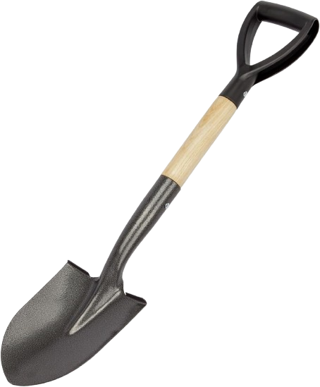
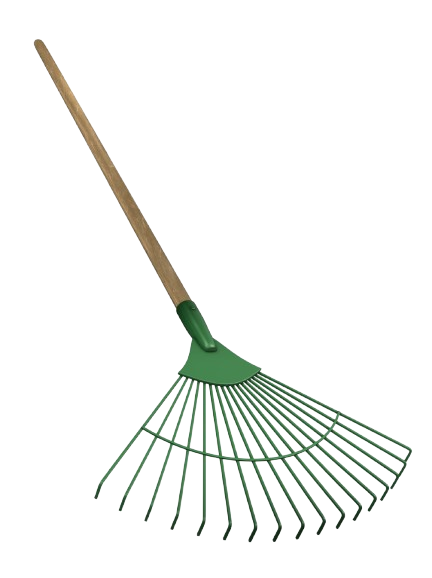
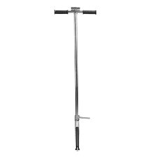

Soil Sampling Game
Drag a tool → Drop on soil → Then put the sample into the bucket. Collect all 3!
Your browser does not support the video tag.

Use the shovel to dig the soil and take a small sample!

Use the rake to loosen the soil and make it ready to check!

Use the probe to measure soil moisture and temperature accurately!
⬇️
Next ➡️